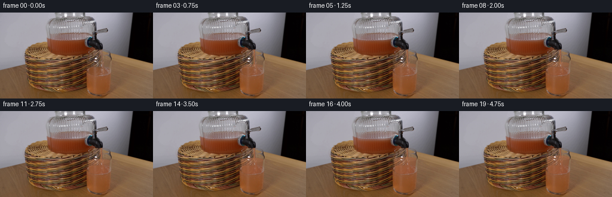
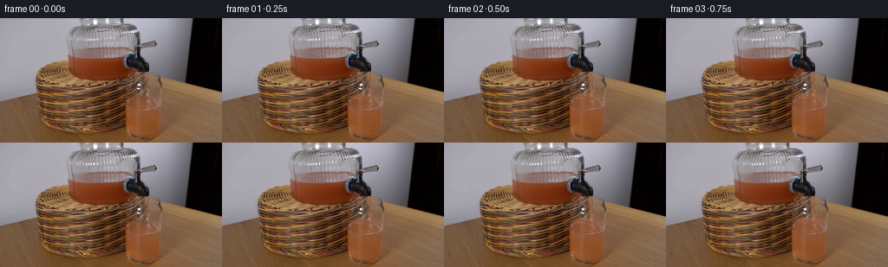
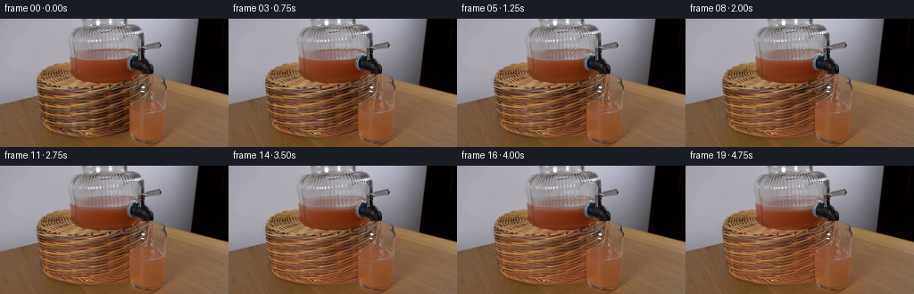
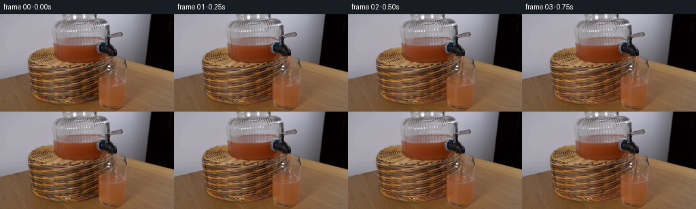

CODING AGENTS AS PIXEL WORLD MODELS
traex/GPT-6.1-Sol · 0070
点击播放 · 原生 RGB 像素
逐轮保存的候选
回放视频、检查图与代码变化。
每份候选均可单独播放。实际图片检查记录在下方工具轨迹中。
候选 01播放与检查图
点击播放 · 原生 RGB 像素


展开代码变化
--- 上一保存版本
+++ 本次保存版本
@@ -0,0 +1,156 @@
+from pathlib import Path
+import numpy as np
+from PIL import Image
+from scipy.ndimage import gaussian_filter, map_coordinates
+import artifact_io
+
+ROOT=Path(__file__).resolve().parent
+SOURCE=np.array(Image.open(ROOT/'first_frame.png').convert('RGB'),dtype=np.uint8)
+S=4
+H,W=144,256
+Y,X=np.mgrid[0:H*S,0:W*S].astype(np.float32)
+X=(X+.5)/S-.5
+Y=(Y+.5)/S-.5
+PHOTO=np.array(Image.fromarray(SOURCE).resize((W*S,H*S),Image.Resampling.BICUBIC),dtype=np.float32)
+LOW=gaussian_filter(PHOTO,(1.25*S,1.25*S,0))
+LUMA=PHOTO.mean(2)
+
+
+def smooth(x):
+ x=np.clip(x,0,1)
+ return x*x*(3-2*x)
+
+def blend(im,col,a):
+ a=np.clip(a,0,1)
+ im[:]=im*(1-a[...,None])+np.asarray(col)*a[...,None]
+
+def ellipse(cx,cy,rx,ry):
+ return smooth((1-((X-cx)/rx)**2-((Y-cy)/ry)**2)*min(rx,ry)*2+.5)
+
+
+def generate_frame(i):
+ if i==0:return SOURCE.copy()
+ t=i/4
+ onset=smooth((t-.05)/.22)
+ # Flow into a stationary glass. Incoming volume raises the free surface;
+ # suspended citrus pulp disperses through the pre-existing clear water.
+ volume=np.clip((t-.16)/4.7,0,1)
+ cy=91.1-13.6*volume
+ cx=165.85-.12*volume
+ rx=18.2+1.1*volume
+ ry=3.55+0.3*volume
+ wave=.18*np.sin(2.9*(X-168.5)-t*13)*np.exp(-((X-168.5)/13)**2)
+ ellx=np.clip((X-cx)/rx,-1,1)
+ front=cy+ry*np.sqrt(np.maximum(0,1-ellx**2))+wave
+ back=cy-ry*np.sqrt(np.maximum(0,1-ellx**2))+wave
+ left=145.55+.115*(Y-76)
+ right=185.1-.145*(Y-76)
+ wall=smooth((X-left)*2)*smooth((right-X)*2)
+ bottom=100.8+4.4*np.sqrt(np.maximum(0,1-((X-165.75)/17.3)**2))
+ body=wall*smooth((Y-front)*2+.5)*smooth((bottom-Y)*2+.5)
+ body*=smooth((Y-72)*2)
+ # Subtle refracted patterns on the original glass, with opaque juice
+ # diminishing the view of the wood behind it rather than repainting glass.
+ im=PHOTO.copy()
+ mixing=(1-np.exp(-t/1.65))*onset
+ sediment=smooth((Y-88)/8)
+ plumes=.5+.5*np.sin((X-168)*.71+(Y-85)*.20+t*1.15)*np.cos((X-160)*.19-(Y-90)*.27-t*.72)
+ plume=np.exp(-((X-168.2-(Y-cy)*.09)/((Y-cy)*.29+2.9))**2)
+ mass=np.clip(.64*mixing+.23*mixing*plumes+.12*sediment*mixing+.17*plume*onset,0,.96)
+ absorption=.83*mass
+ z=np.clip((Y-cy)/(105-cy),0,1)
+ across=np.clip((X-147)/38,0,1)
+ juice=np.empty_like(im)
+ juice[...,0]=169-15*across-10*z+2*np.sin((X-149)*.16)
+ juice[...,1]=108-23*across-14*z+1.5*plumes
+ juice[...,2]=73-20*across-12*z+1.4*plumes
+ # Ambient shading and the photographed fine glass reflections.
+ reflection=np.maximum(0,PHOTO-LOW)
+ juice+=reflection*.61
+ alpha=body*absorption
+ # Avoid tinting specular highlights on the near wall.
+ glare=smooth((LUMA-120)/55)
+ alpha*=1-.78*glare
+ blend(im,juice,alpha)
+
+ # Translucent elliptic free surface, matching the perspective of the cup.
+ surface=wall*smooth((Y-back)*2+.5)*smooth((front-Y)*2+.5)
+ surface*=smooth((X-(cx-rx))*2)*smooth(((cx+rx)-X)*2)
+ surfcol=juice.copy()
+ surfcol[...,0]+=7
+ surfcol[...,1]+=8
+ surfcol[...,2]+=7
+ blend(im,surfcol,surface*(.34+.30*mixing)*onset*(1-.65*glare))
+ boundary=np.exp(-((Y-front)/.3)**2)*wall
+ blend(im,(189,139,105),boundary*.23*mixing)
+ backline=np.exp(-((Y-back)/.35)**2)*wall
+ blend(im,(133,80,48),backline*.13*mixing)
+ # Tiny intersecting waves generated at the falling jet's impact.
+ impact_x=168.3+.17*np.sin(t*6.1)
+ radial=np.sqrt(((X-impact_x)/1.0)**2+((Y-cy)/.28)**2)
+ ripple=np.sin(radial*2.05-t*15)*np.exp(-radial/7)*surface
+ im+=ripple[...,None]*np.array([4.2,4.9,4.0])*onset
+ crater=ellipse(impact_x,cy+.1,1.4,.54)*surface
+ blend(im,(123,75,45),crater*.20*onset)
+
+ # Gravity-accelerated narrow jet. Liquid stretches slightly and is lit
+ # from the same direction as the fixed apparatus.
+ y0=61.2
+ delay=np.sqrt(np.maximum(0,Y-y0)/420)
+ available=smooth((t-.065-delay)*19)
+ center=168.7+.16*np.sin((Y-y0)*.52-t*18)+.055*np.sin((Y-y0)*1.37-t*29)
+ center+=.12*np.maximum(0,Y-y0)/28
+ speed=np.sqrt(13**2+2*420*np.maximum(0,Y-y0))
+ width=2.55*np.sqrt(13/speed)
+ width=np.clip(width,1.55,2.55)
+ signed=(X-center)/(width*.5)
+ jet=smooth((1-np.abs(signed))*width*S*.52+.45)
+ jet*=smooth((Y-y0)*3+.5)*smooth((cy+.35-Y)*3+.5)*available
+ streak=np.sin((Y-y0)*1.55-t*36)+.4*np.sin((Y-y0)*3.3-t*55)
+ jetcolor=np.empty_like(im)
+ jetcolor[...,0]=168+10*np.exp(-((signed+.37)/.38)**2)-21*np.clip(signed,0,1)+2.1*streak
+ jetcolor[...,1]=101+22*np.exp(-((signed+.37)/.35)**2)-27*np.clip(signed,0,1)+2.8*streak
+ jetcolor[...,2]=62+19*np.exp(-((signed+.37)/.35)**2)-16*np.clip(signed,0,1)+2*streak
+ blend(im,jetcolor,jet*.93)
+ filament=np.exp(-((signed+.38)/.19)**2)*jet
+ blend(im,(208,165,116),filament*.23)
+ # A slight diffuse wet highlight around the impact, no spray outside cup.
+ cap=ellipse(impact_x,cy-.22,1.85,.77)
+ blend(im,(180,120,81),cap*.35*onset)
+ for j in range(4):
+ phase=(t*2.3+j*.29)%1
+ bx=impact_x+(j-1.4)*.74+np.sin(t*5+j)*.3
+ by=cy-1.55*np.sin(phase*np.pi)
+ drop=ellipse(bx,by,.22+.06*(j%2),.33)
+ blend(im,(190,137,98),drop*.34*onset)
+ # Air entrained by the incoming juice, small bubbles travel to the surface.
+ for j in range(7):
+ age=(t*.8+j*.157)%1
+ by=cy+1.7+age*min(8,104-cy-2)
+ bx=167.7+np.sin(j*5.7)*3+np.sin(t*2+j)*.45
+ rad=.24+.12*(j%3)
+ bubble=ellipse(bx,by,rad,rad*.8)*body
+ blend(im,(197,155,115),bubble*.34*mixing)
+ bcore=ellipse(bx+.09,by+.08,rad*.47,rad*.4)*body
+ blend(im,(109,64,34),bcore*.19*mixing)
+
+ # Conservation: a small falling level in the much larger reservoir.
+ fall=2.8*volume
+ jarwin=smooth((X-85)/3)*smooth((149-X)/3)*smooth((Y-32)/2)*smooth((54-Y)/4)
+ fixed_glass=smooth((LUMA-160)/70)
+ for c in range(3):
+ shifted=map_coordinates(LOW[...,c],[np.clip((Y+.5)*S-.5-fall*S,0,H*S-1),np.clip((X+.5)*S-.5,0,W*S-1)],order=1,mode='nearest')
+ im[...,c]+=(shifted-LOW[...,c])*jarwin*.78*(1-.8*fixed_glass)
+ # Preserve a perfectly locked-off photographic background using only
+ # supersampled differential layers when returning to the native grid.
+ diff=im-PHOTO
+ diff=diff.reshape(H,S,W,S,3).mean((1,3))
+ return np.uint8(np.clip(np.rint(SOURCE.astype(np.float32)+diff),0,255))
+
+
+def main():
+ frames=np.stack([generate_frame(i) for i in range(20)])
+ assert np.array_equal(frames[0],SOURCE)
+ artifact_io.save(frames,ROOT)
+
+if __name__=='__main__': main()
候选 02播放与检查图
点击播放 · 原生 RGB 像素


展开代码变化
--- 上一保存版本
+++ 本次保存版本
@@ -35,38 +35,38 @@
# Flow into a stationary glass. Incoming volume raises the free surface;
# suspended citrus pulp disperses through the pre-existing clear water.
volume=np.clip((t-.16)/4.7,0,1)
- cy=91.1-13.6*volume
- cx=165.85-.12*volume
- rx=18.2+1.1*volume
- ry=3.55+0.3*volume
- wave=.18*np.sin(2.9*(X-168.5)-t*13)*np.exp(-((X-168.5)/13)**2)
+ cy=102.0-21.0*volume
+ cx=104.0+1.8*volume
+ rx=57.0+6.0*volume
+ ry=10.4+2.0*volume
+ wave=.16*np.sin(.7*(X-150)-t*13)*np.exp(-((X-156)/22)**2)
ellx=np.clip((X-cx)/rx,-1,1)
front=cy+ry*np.sqrt(np.maximum(0,1-ellx**2))+wave
back=cy-ry*np.sqrt(np.maximum(0,1-ellx**2))+wave
- left=145.55+.115*(Y-76)
- right=185.1-.145*(Y-76)
+ left=np.interp(Y,[50,68,85,100,112,124,133],[74,41.8,42.8,45,48.4,57.0,81])
+ right=np.interp(Y,[50,68,85,100,112,124,133],[160,171,171,165,157,147,139])
wall=smooth((X-left)*2)*smooth((right-X)*2)
- bottom=100.8+4.4*np.sqrt(np.maximum(0,1-((X-165.75)/17.3)**2))
+ bottom=125.0+8.1*np.sqrt(np.maximum(0,1-((X-104.0)/48.0)**2))
body=wall*smooth((Y-front)*2+.5)*smooth((bottom-Y)*2+.5)
- body*=smooth((Y-72)*2)
+ body*=smooth((Y-68)*2)
# Subtle refracted patterns on the original glass, with opaque juice
# diminishing the view of the wood behind it rather than repainting glass.
im=PHOTO.copy()
mixing=(1-np.exp(-t/1.65))*onset
- sediment=smooth((Y-88)/8)
- plumes=.5+.5*np.sin((X-168)*.71+(Y-85)*.20+t*1.15)*np.cos((X-160)*.19-(Y-90)*.27-t*.72)
- plume=np.exp(-((X-168.2-(Y-cy)*.09)/((Y-cy)*.29+2.9))**2)
- mass=np.clip(.64*mixing+.23*mixing*plumes+.12*sediment*mixing+.17*plume*onset,0,.96)
+ sediment=smooth((Y-114)/10)
+ plumes=.5+.5*np.sin((X-137)*.16+(Y-100)*.21+t*1.15)*np.cos((X-105)*.11-(Y-103)*.12-t*.72)
+ plume=np.exp(-((X-157+(Y-cy)*.8)/(np.maximum(0,Y-cy)*.7+4.9))**2)
+ mass=np.clip(.51*mixing+.21*mixing*plumes+.12*sediment*mixing+.22*plume*onset,0,.96)
absorption=.83*mass
- z=np.clip((Y-cy)/(105-cy),0,1)
- across=np.clip((X-147)/38,0,1)
+ z=np.clip((Y-cy)/(133-cy),0,1)
+ across=np.clip((X-43)/126,0,1)
juice=np.empty_like(im)
- juice[...,0]=169-15*across-10*z+2*np.sin((X-149)*.16)
- juice[...,1]=108-23*across-14*z+1.5*plumes
- juice[...,2]=73-20*across-12*z+1.4*plumes
+ juice[...,0]=174-17*across-13*z+2*np.sin((X-49)*.1)
+ juice[...,1]=104-19*across-12*z+1.5*plumes
+ juice[...,2]=63-12*across-9*z+1.4*plumes
# Ambient shading and the photographed fine glass reflections.
- reflection=np.maximum(0,PHOTO-LOW)
- juice+=reflection*.61
+ reflection=(PHOTO-LOW)
+ juice+=reflection*.77
alpha=body*absorption
# Avoid tinting specular highlights on the near wall.
glare=smooth((LUMA-120)/55)
@@ -80,15 +80,15 @@
surfcol[...,0]+=7
surfcol[...,1]+=8
surfcol[...,2]+=7
- blend(im,surfcol,surface*(.34+.30*mixing)*onset*(1-.65*glare))
+ blend(im,surfcol,surface*(.10+.18*mixing)*onset*(1-.65*glare))
boundary=np.exp(-((Y-front)/.3)**2)*wall
blend(im,(189,139,105),boundary*.23*mixing)
backline=np.exp(-((Y-back)/.35)**2)*wall
blend(im,(133,80,48),backline*.13*mixing)
# Tiny intersecting waves generated at the falling jet's impact.
- impact_x=168.3+.17*np.sin(t*6.1)
- radial=np.sqrt(((X-impact_x)/1.0)**2+((Y-cy)/.28)**2)
- ripple=np.sin(radial*2.05-t*15)*np.exp(-radial/7)*surface
+ impact_x=168.3-.18*(cy-61.2)+.17*np.sin(t*6.1)
+ radial=np.sqrt(((X-impact_x)/1.0)**2+((Y-cy)/.21)**2)
+ ripple=np.sin(radial*2.05-t*15)*np.exp(-radial/10)*surface
im+=ripple[...,None]*np.array([4.2,4.9,4.0])*onset
crater=ellipse(impact_x,cy+.1,1.4,.54)*surface
blend(im,(123,75,45),crater*.20*onset)
@@ -99,7 +99,7 @@
delay=np.sqrt(np.maximum(0,Y-y0)/420)
available=smooth((t-.065-delay)*19)
center=168.7+.16*np.sin((Y-y0)*.52-t*18)+.055*np.sin((Y-y0)*1.37-t*29)
- center+=.12*np.maximum(0,Y-y0)/28
+ center-=.18*np.maximum(0,Y-y0)
speed=np.sqrt(13**2+2*420*np.maximum(0,Y-y0))
width=2.55*np.sqrt(13/speed)
width=np.clip(width,1.55,2.55)
@@ -126,8 +126,8 @@
# Air entrained by the incoming juice, small bubbles travel to the surface.
for j in range(7):
age=(t*.8+j*.157)%1
- by=cy+1.7+age*min(8,104-cy-2)
- bx=167.7+np.sin(j*5.7)*3+np.sin(t*2+j)*.45
+ by=cy+4+age*min(12,130-cy-3)
+ bx=impact_x-2+np.sin(j*5.7)*5+np.sin(t*2+j)*.45
rad=.24+.12*(j%3)
bubble=ellipse(bx,by,rad,rad*.8)*body
blend(im,(197,155,115),bubble*.34*mixing)
@@ -135,7 +135,7 @@
blend(im,(109,64,34),bcore*.19*mixing)
# Conservation: a small falling level in the much larger reservoir.
- fall=2.8*volume
+ fall=3.8*volume
jarwin=smooth((X-85)/3)*smooth((149-X)/3)*smooth((Y-32)/2)*smooth((54-Y)/4)
fixed_glass=smooth((LUMA-160)/70)
for c in range(3):
可观测工具轨迹
实际执行的命令与返回图片。
命令 1exit 0
/bin/bash -lc "ls -la && cat prompt.txt && printf '\\n---RULES---\\n' && cat GENERATION_RULES.md"
命令 2exit 0
/bin/bash -lc "cat artifact_io.py && python - <<'PY'
from PIL import Image
import numpy as np
im=np.array(Image.open('first_frame.png'));print('image',im.shape)
# downsample brightness ASCII
im=np.array(Image.fromarray(im).resize((128,72)))
g=im.mean(2)
cs=' .:-=+*#%@'
for row in g: print(''.join(cs[int(x)//26 if int(x)//26<10 else 9] for x in row))
PY"命令 3exit 0
/bin/bash -lc "python - <<'PY'
from PIL import Image
import numpy as np
im=np.array(Image.open('first_frame.png'))
for y in range(0,144,4):
print(f'{y:3d} '+''.join(( ' ' if max(c)<35 else 'D' if max(c)<70 else 'r' if c[0]>c[1]*1.25 and c[0]>c[2]*1.3 else 'o' if c[0]>c[2]*1.45 and c[1]>c[2]*1.17 else 'Y' if c[0]>c[2]*1.3 else '#' if min(c)>180 else '+' if min(c)>140 else '=' if min(c)>105 else '-' if min(c)>65 else ':' )for c in im[y,::2]))
print('RGB grid every 8 pixel:')
for y in range(0,144,8):
print(y, ' '.join(f'{x}:{tuple(im[y,x])}' for x in range(32,208,8)))
PY"命令 4exit 0
/bin/bash -lc "python - <<'PY'
import numpy as np
from PIL import Image
from scipy.ndimage import gaussian_filter
im=np.array(Image.open('first_frame.png')).astype(float)
g=im.mean(2)
for bounds in [(70,175,30,71),(40,180,64,100),(40,150,93,134)]:
x1,x2,y1,y2=bounds
print('\\nCROP',bounds,'brightness')
print(' '+''.join(str(x//10%10) for x in range(x1,x2)))
print(' '+''.join(str(x%10) for x in range(x1,x2)))
cs=' .,:;irsXA253hMHGS#9B&@'
for y in range(y1,y2):
print(f'{y:3d} '+''.join(cs[min(len(cs)-1,int(v/256*len(cs)))] for v in g[y,x1:x2]))
print('\\nEDGES')
g=gaussian_filter(g,.7)
gx=np.hypot(*np.gradient(g))
for y in range(144):
print(f'{y:3d} '+''.join(' ' if v<4 else '.' if v<9 else ':' if v<15 else '+' if v<22 else '#' if v<35 else '@' for v in gx[y,::2]))
PY"命令 5exit 0
/bin/bash -lc "python - <<'PY'
from PIL import Image
import numpy as np
im=np.array(Image.open('first_frame.png')).astype(float)
# color bands human interpretable all columns in 1 pix (x35-195), scale levels & hue
cset=' .:-=+*#%@'
for ch in range(3):
print('CHANNEL',ch)
for y in range(0,144,2):
print(f'{y:3d} '+''.join(cset[int(v*10/256)] for v in im[y,35:195,ch]))
PY"命令 6exit 0
/bin/bash -lc "python - <<'PY'
import numpy as np
from PIL import Image
im=np.array(Image.open('first_frame.png'))
# identify grayscale background discontinuities along contours
for y in range(40,136,2):
# x points color deviation from bg gray or table avg smooth
p=im[y].astype(float)
# local ridge strengths
lum=p.mean(1)
from scipy.signal import find_peaks
peaks,_=find_peaks(abs(np.diff(lum)),height=12,distance=4)
print(y, [(int(x), round(float(lum[x])),round(float(lum[x+1])),tuple(map(int,im[y,x]))) for x in peaks if x<185])
# detailed spigot
print('spigot rows x140-187: Red Green Blue')
for y in range(25,64,2):
print(y,' '.join('%d:%d,%d,%d'%(x,*im[y,x]) for x in range(140,184,2)))
PY"命令 7exit 0
/bin/bash -lc "python - <<'PY'
import numpy as np
from PIL import Image
from scipy.ndimage import gaussian_filter
im=np.array(Image.open('first_frame.png')).astype(float)
# only detail softened two pixels -> glass outline
im=gaussian_filter(im,(1.3,1.3,0))
# map relative brightness using local deviation from low pass
im=im.mean(2)
bg=gaussian_filter(im,8)
d=im-bg
print('highpass structural')
cs='@#*=:.-+oOX'
for y in range(36,140):
print(f'{y:3d} '+''.join(cs[int(np.clip((v+35)/7,0,10))] for v in d[y,35:195]))
PY"命令 8exit 0
/bin/bash -lc "python - <<'PY'
from PIL import Image
import numpy as np
im=np.array(Image.open('first_frame.png')).astype(float)
# coarse pixel color into ANSI truecolor as numeric text outputs (not view tools)
# other possible discern: horizontal/vertical patterns
from scipy.ndimage import gaussian_filter
p=gaussian_filter(im,(2,2,0))
for y in range(0,144,3):
print(f'{y:3d}', ''.join(' ' if max(c)<28 else 'k' if max(c)<55 else 'R' if c[0]-c[1]>62 else 'r' if c[0]-c[1]>48 else 'O' if c[0]-c[1]>32 and c[1]-c[2]>32 else 'o' if c[0]-c[1]>27 and c[1]-c[2]>20 else 'y' if c[0]-c[2]>20 else '.' if c.mean()<115 else '-' if c.mean()<140 else '=' if c.mean()<170 else '#' if c.mean()<210 else 'W' for c in p[y,::2]))
PY"命令 9exit 0
/bin/bash -lc "python - <<'PY'
from PIL import Image
import numpy as np
from scipy.ndimage import gaussian_filter
im=np.array(Image.open('first_frame.png')).astype(float)
for x in [40,42,44,46,48,50,52,58,66,80,100,120,140,144,146,148,150,160,164,168,170,172,176,182,186]:
print('X',x,' '.join(f'{y}:{tuple(np.round(im[y,x]).astype(int))}' for y in range(64,140,4)))
PY"命令 10exit 0
/bin/bash -lc "python - <<'PY'
import numpy as np
from PIL import Image
from scipy.ndimage import gaussian_filter
p=np.array(Image.open('first_frame.png')).astype(float)
cs=' .:;"'!iotx%#@'"'
for ch in [0,1,2]:
print('ch',ch, ' x 145 to 194')
print(' '+''.join(str(x//10%10) for x in range(145,195)))
print(' '+''.join(str(x%10) for x in range(145,195)))
for y in range(55,111):
print(f'{y:3d} '+''.join(cs[min(11,int(v/16))] for v in p[y,145:195,ch]))
# correlate repeated lines to identify glass bottom
print('smoothed y means')
for y in range(55,136):
print(y, ' '.join(f'{a}-{b}:'+','.join(map(str,p[y,a:b].mean(0).round().astype(int))) for a,b in [(45,75),(90,120),(140,147),(165,170),(170,175),(175,180),(180,185)]))
PY"命令 11exit 0
/bin/bash -lc "python - <<'PY'
from PIL import Image
import numpy as np
from scipy.ndimage import gaussian_filter
p=np.array(Image.open('first_frame.png')).astype(float)
# print exact cropped brightness, emphasizing around faucet cup border
for y in range(58,110):
s=''
for x in range(138,190):
r,g,b=p[y,x]; v=(r+g+b)/3
s+='@' if min(r,g,b)>200 else '#' if min(r,g,b)>130 else '*' if v>125 else '+' if v>100 else '=' if v>80 else '-' if v>60 else ':' if v>40 else '.' if v>20 else ' '
print('%3d'%y,s)
print('bright points',[(int(y),int(x),p[y,x].astype(int).tolist()) for y,x in np.argwhere((p.min(2)>170)&(np.indices(p.shape[:2])[0]>60)&(np.indices(p.shape[:2])[0]<106)&(np.indices(p.shape[:2])[1]>140)&(np.indices(p.shape[:2])[1]<188))])
PY"命令 12exit 0
/bin/bash -lc "python - <<'PY'
import numpy as np
from PIL import Image
p=np.array(Image.open('first_frame.png'))
# boundary contour regions receiving glass
for y in range(72,129,4):
print(y,' '.join(f'{x}:{tuple(map(int,p[y,x]))}' for x in range(137,176,2)))
# top of foreground cup x45-82
for y in range(48,83,2):
print(y,' '.join(f'{x}:{tuple(map(int,p[y,x]))}' for x in range(42,83,4)))
PY"命令 13exit 0
/bin/bash -lc "cat > generate.py <<'PY'
from pathlib import Path
import numpy as np
from PIL import Image
from scipy.ndimage import gaussian_filter, map_coordinates
import artifact_io
ROOT=Path(__file__).resolve().parent
SOURCE=np.array(Image.open(ROOT/'first_frame.png').convert('RGB'),dtype=np.uint8)
S=4
H,W=144,256
Y,X=np.mgrid[0:H*S,0:W*S].astype(np.float32)
X=(X+.5)/S-.5
Y=(Y+.5)/S-.5
PHOTO=np.array(Image.fromarray(SOURCE).resize((W*S,H*S),Image.Resampling.BICUBIC),dtype=np.float32)
LOW=gaussian_filter(PHOTO,(1.25*S,1.25*S,0))
LUMA=PHOTO.mean(2)
def smooth(x):
x=np.clip(x,0,1)
return x*x*(3-2*x)
def blend(im,col,a):
a=np.clip(a,0,1)
im[:]=im*(1-a[...,None])+np.asarray(col)*a[...,None]
def ellipse(cx,cy,rx,ry):
return smooth((1-((X-cx)/rx)**2-((Y-cy)/ry)**2)*min(rx,ry)*2+.5)
def generate_frame(i):
if i==0:return SOURCE.copy()
t=i/4
onset=smooth((t-.05)/.22)
# Flow into a stationary glass. Incoming volume raises the free surface;
# suspended citrus pulp disperses through the pre-existing clear water.
volume=np.clip((t-.16)/4.7,0,1)
cy=91.1-13.6*volume
cx=165.85-.12*volume
rx=18.2+1.1*volume
ry=3.55+0.3*volume
wave=.18*np.sin(2.9*(X-168.5)-t*13)*np.exp(-((X-168.5)/13)**2)
ellx=np.clip((X-cx)/rx,-1,1)
front=cy+ry*np.sqrt(np.maximum(0,1-ellx**2))+wave
back=cy-ry*np.sqrt(np.maximum(0,1-ellx**2))+wave
left=145.55+.115*(Y-76)
right=185.1-.145*(Y-76)
wall=smooth((X-left)*2)*smooth((right-X)*2)
bottom=100.8+4.4*np.sqrt(np.maximum(0,1-((X-165.75)/17.3)**2))
body=wall*smooth((Y-front)*2+.5)*smooth((bottom-Y)*2+.5)
body*=smooth((Y-72)*2)
# Subtle refracted patterns on the original glass, with opaque juice
# diminishing the view of the wood behind it rather than repainting glass.
im=PHOTO.copy()
mixing=(1-np.exp(-t/1.65))*onset
sediment=smooth((Y-88)/8)
plumes=.5+.5*np.sin((X-168)*.71+(Y-85)*.20+t*1.15)*np.cos((X-160)*.19-(Y-90)*.27-t*.72)
plume=np.exp(-((X-168.2-(Y-cy)*.09)/((Y-cy)*.29+2.9))**2)
mass=np.clip(.64*mixing+.23*mixing*plumes+.12*sediment*mixing+.17*plume*onset,0,.96)
absorption=.83*mass
z=np.clip((Y-cy)/(105-cy),0,1)
across=np.clip((X-147)/38,0,1)
juice=np.empty_like(im)
juice[...,0]=169-15*across-10*z+2*np.sin((X-149)*.16)
juice[...,1]=108-23*across-14*z+1.5*plumes
juice[...,2]=73-20*across-12*z+1.4*plumes
# Ambient shading and the photographed fine glass reflections.
reflection=np.maximum(0,PHOTO-LOW)
juice+=reflection*.61
alpha=body*absorption
# Avoid tinting specular highlights on the near wall.
glare=smooth((LUMA-120)/55)
alpha*=1-.78*glare
blend(im,juice,alpha)
# Translucent elliptic free surface, matching the perspective of the cup.
surface=wall*smooth((Y-back)*2+.5)*smooth((front-Y)*2+.5)
surface*=smooth((X-(cx-rx))*2)*smooth(((cx+rx)-X)*2)
surfcol=juice.copy()
surfcol[...,0]+=7
surfcol[...,1]+=8
surfcol[...,2]+=7
blend(im,surfcol,surface*(.34+.30*mixing)*onset*(1-.65*glare))
boundary=np.exp(-((Y-front)/.3)**2)*wall
blend(im,(189,139,105),boundary*.23*mixing)
backline=np.exp(-((Y-back)/.35)**2)*wall
blend(im,(133,80,48),backline*.13*mixing)
# Tiny intersecting waves generated at the falling jet's impact.
impact_x=168.3+.17*np.sin(t*6.1)
radial=np.sqrt(((X-impact_x)/1.0)**2+((Y-cy)/.28)**2)
ripple=np.sin(radial*2.05-t*15)*np.exp(-radial/7)*surface
im+=ripple[...,None]*np.array([4.2,4.9,4.0])*onset
crater=ellipse(impact_x,cy+.1,1.4,.54)*surface
blend(im,(123,75,45),crater*.20*onset)
# Gravity-accelerated narrow jet. Liquid stretches slightly and is lit
# from the same direction as the fixed apparatus.
y0=61.2
delay=np.sqrt(np.maximum(0,Y-y0)/420)
available=smooth((t-.065-delay)*19)
center=168.7+.16*np.sin((Y-y0)*.52-t*18)+.055*np.sin((Y-y0)*1.37-t*29)
center+=.12*np.maximum(0,Y-y0)/28
speed=np.sqrt(13**2+2*420*np.maximum(0,Y-y0))
width=2.55*np.sqrt(13/speed)
width=np.clip(width,1.55,2.55)
signed=(X-center)/(width*.5)
jet=smooth((1-np.abs(signed))*width*S*.52+.45)
jet*=smooth((Y-y0)*3+.5)*smooth((cy+.35-Y)*3+.5)*available
streak=np.sin((Y-y0)*1.55-t*36)+.4*np.sin((Y-y0)*3.3-t*55)
jetcolor=np.empty_like(im)
jetcolor[...,0]=168+10*np.exp(-((signed+.37)/.38)**2)-21*np.clip(signed,0,1)+2.1*streak
jetcolor[...,1]=101+22*np.exp(-((signed+.37)/.35)**2)-27*np.clip(signed,0,1)+2.8*streak
jetcolor[...,2]=62+19*np.exp(-((signed+.37)/.35)**2)-16*np.clip(signed,0,1)+2*streak
blend(im,jetcolor,jet*.93)
filament=np.exp(-((signed+.38)/.19)**2)*jet
blend(im,(208,165,116),filament*.23)
# A slight diffuse wet highlight around the impact, no spray outside cup.
cap=ellipse(impact_x,cy-.22,1.85,.77)
blend(im,(180,120,81),cap*.35*onset)
for j in range(4):
phase=(t*2.3+j*.29)%1
bx=impact_x+(j-1.4)*.74+np.sin(t*5+j)*.3
by=cy-1.55*np.sin(phase*np.pi)
drop=ellipse(bx,by,.22+.06*(j%2),.33)
blend(im,(190,137,98),drop*.34*onset)
# Air entrained by the incoming juice, small bubbles travel to the surface.
for j in range(7):
age=(t*.8+j*.157)%1
by=cy+1.7+age*min(8,104-cy-2)
bx=167.7+np.sin(j*5.7)*3+np.sin(t*2+j)*.45
rad=.24+.12*(j%3)
bubble=ellipse(bx,by,rad,rad*.8)*body
blend(im,(197,155,115),bubble*.34*mixing)
bcore=ellipse(bx+.09,by+.08,rad*.47,rad*.4)*body
blend(im,(109,64,34),bcore*.19*mixing)
# Conservation: a small falling level in the much larger reservoir.
fall=2.8*volume
jarwin=smooth((X-85)/3)*smooth((149-X)/3)*smooth((Y-32)/2)*smooth((54-Y)/4)
fixed_glass=smooth((LUMA-160)/70)
for c in range(3):
shifted=map_coordinates(LOW[...,c],[np.clip((Y+.5)*S-.5-fall*S,0,H*S-1),np.clip((X+.5)*S-.5,0,W*S-1)],order=1,mode='nearest')
im[...,c]+=(shifted-LOW[...,c])*jarwin*.78*(1-.8*fixed_glass)
# Preserve a perfectly locked-off photographic background using only
# supersampled differential layers when returning to the native grid.
diff=im-PHOTO
diff=diff.reshape(H,S,W,S,3).mean((1,3))
return np.uint8(np.clip(np.rint(SOURCE.astype(np.float32)+diff),0,255))
def main():
frames=np.stack([generate_frame(i) for i in range(20)])
assert np.array_equal(frames[0],SOURCE)
artifact_io.save(frames,ROOT)
if __name__=='__main__': main()
PY
python generate.py"命令 14exit 0
/bin/bash -lc "cp generate.py .tmp/candidate_right.py
python - <<'PY'
p='generate.py'
s=open(p).read()
s=s.replace('cy=91.1-13.6*volume','cy=102.0-21.0*volume').replace('cx=165.85-.12*volume','cx=104.0+1.8*volume').replace('rx=18.2+1.1*volume','rx=57.0+6.0*volume').replace('ry=3.55+0.3*volume','ry=10.4+2.0*volume')
s=s.replace('wave=.18*np.sin(2.9*(X-168.5)-t*13)*np.exp(-((X-168.5)/13)**2)','wave=.16*np.sin(.7*(X-150)-t*13)*np.exp(-((X-156)/22)**2)')
s=s.replace('left=145.55+.115*(Y-76)','left=np.interp(Y,[50,68,85,100,112,124,133],[74,41.8,42.8,45,48.4,57.0,81])').replace('right=185.1-.145*(Y-76)','right=np.interp(Y,[50,68,85,100,112,124,133],[160,171,171,165,157,147,139])')
s=s.replace('bottom=100.8+4.4*np.sqrt(np.maximum(0,1-((X-165.75)/17.3)**2))','bottom=125.0+8.1*np.sqrt(np.maximum(0,1-((X-104.0)/48.0)**2))')
s=s.replace('body*=smooth((Y-72)*2)','body*=smooth((Y-68)*2)')
s=s.replace('sediment=smooth((Y-88)/8)','sediment=smooth((Y-114)/10)')
s=s.replace('plumes=.5+.5*np.sin((X-168)*.71+(Y-85)*.20+t*1.15)*np.cos((X-160)*.19-(Y-90)*.27-t*.72)','plumes=.5+.5*np.sin((X-137)*.16+(Y-100)*.21+t*1.15)*np.cos((X-105)*.11-(Y-103)*.12-t*.72)')
s=s.replace('plume=np.exp(-((X-168.2-(Y-cy)*.09)/((Y-cy)*.29+2.9))**2)','plume=np.exp(-((X-157+(Y-cy)*.8)/(np.maximum(0,Y-cy)*.7+4.9))**2)')
s=s.replace('mass=np.clip(.64*mixing+.23*mixing*plumes+.12*sediment*mixing+.17*plume*onset,0,.96)','mass=np.clip(.51*mixing+.21*mixing*plumes+.12*sediment*mixing+.22*plume*onset,0,.96)')
s=s.replace('z=np.clip((Y-cy)/(105-cy),0,1)','z=np.clip((Y-cy)/(133-cy),0,1)').replace('across=np.clip((X-147)/38,0,1)','across=np.clip((X-43)/126,0,1)')
s=s.replace('juice[...,0]=169-15*across-10*z+2*np.sin((X-149)*.16)','juice[...,0]=174-17*across-13*z+2*np.sin((X-49)*.1)').replace('juice[...,1]=108-23*across-14*z+1.5*plumes','juice[...,1]=104-19*across-12*z+1.5*plumes').replace('juice[...,2]=73-20*across-12*z+1.4*plumes','juice[...,2]=63-12*across-9*z+1.4*plumes')
s=s.replace('reflection=np.maximum(0,PHOTO-LOW)','reflection=(PHOTO-LOW)').replace('juice+=reflection*.61','juice+=reflection*.77')
s=s.replace('surface*(.34+.30*mixing)','surface*(.10+.18*mixing)')
s=s.replace('impact_x=168.3+.17*np.sin(t*6.1)','impact_x=168.3-.18*(cy-61.2)+.17*np.sin(t*6.1)')
s=s.replace('((Y-cy)/.28)','((Y-cy)/.21)').replace('np.exp(-radial/7)','np.exp(-radial/10)')
s=s.replace('center+=.12*np.maximum(0,Y-y0)/28','center-=.18*np.maximum(0,Y-y0)')
s=s.replace('by=cy+1.7+age*min(8,104-cy-2)','by=cy+4+age*min(12,130-cy-3)').replace('bx=167.7+np.sin(j*5.7)*3+np.sin(t*2+j)*.45','bx=impact_x-2+np.sin(j*5.7)*5+np.sin(t*2+j)*.45')
s=s.replace('fall=2.8*volume','fall=3.8*volume')
open(p,'w').write(s)
PY
python generate.py"命令 15exit 0
/bin/bash -lc "python - <<'PY'
from PIL import Image
import numpy as np
f0=np.array(Image.open('first_frame.png')).astype(int)
f=np.array(Image.open('frames/19.png')).astype(int)
d=np.abs(f-f0).max(2)
for y in range(28,138,2):
print(f'{y:3d} '+''.join(' ' if v<1 else '.' if v<3 else ':' if v<6 else '-' if v<10 else '+' if v<20 else '*' if v<35 else '#' if v<50 else '@' for v in d[y,::2]))
print('variation', [(i,round(np.abs(np.array(Image.open(f'frames/{i:02d}.png')).astype(float)-f0).mean(),3)) for i in range(20)])
print('bbox',np.argwhere(d>3).min(0),np.argwhere(d>3).max(0))
print('stream per y at final frame')
for y in range(59,86):
vals=[]
for x in range(158,172):
if d[y,x]>8: vals.append((x,f0[y,x].tolist(),f[y,x].tolist()))
print(y, vals)
PY"命令 16exit 0
/bin/bash -lc "mkdir -p .tmp/candidate_02 && cp frames/00.png frames/08.png frames/19.png .tmp/candidate_02/ && python - <<'PY'
import numpy as np
from PIL import Image
from pathlib import Path
frames=np.stack([np.array(Image.open(p).convert('RGB')) for p in sorted(Path('frames').glob('*.png'))])
a=np.load('pixels.npz')['pixels']
assert frames.shape==(20,144,256,3)
assert frames.dtype==np.uint8
assert np.array_equal(frames[0],np.array(Image.open('first_frame.png')))
assert a.shape==(144,256,20)
assert np.array_equal(a[:,:,0],(frames[0,:,:,0].astype(np.uint32)<<16)|(frames[0,:,:,1].astype(np.uint32)<<8)|frames[0,:,:,2])
print('Validated: 20 RGB frames, 256 x 144, first frame exact.')
print('Outputs:', ', '.join(p.name for p in Path('.').iterdir() if p.name in ['pixels.npz','index.html','frames','inspection.png']))
PY"保存候选 2 份；完成命令 16 次；可验证图片返回 0 张。原始 API 响应与完整日志保留在本地。